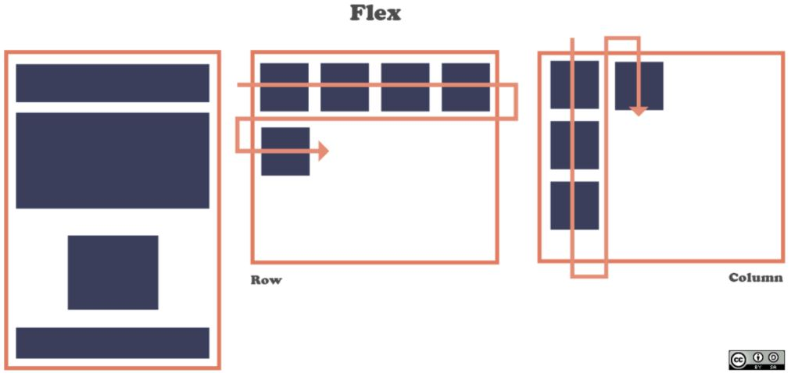
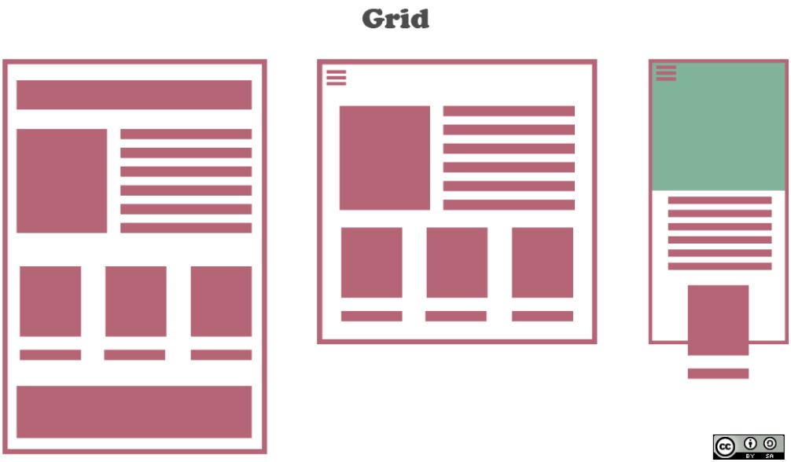

Este espacio tiene como finalidad mostrar dos aspectos de altisima importancia en el momento
de iniciar estudios en el ambito del diseño web. Por lo tanto aqui encontrarás aspectos de mucha
importancia y temas que te serán de mucha ayuda, en esta oportunidad el enfoque estará dado a
mostrar atributos de FlexBox y CSS Grid.
FlexBox
A diferencia de CSS Grid, FlexBox esta pensado para ambientes y diseños de una sola dimensión, en
una fila, en una columna. Flexbox se centra en el flujo de contenido en lugar de en su ubicación,
es decir que las anchuras (o alturas) de los elementos flexibles vienen determinadas por el contenido
del propio elemento, por lo tanto, los elementos flexibles se amplian y se encogen de acuerdo con su
contenido interno y con el espacio disponible.

CSS Grid
Grid es un metodo de diseño planeado para ser implementado cuando se hace uso de matrices, es decir
aplicaciones con filas y columnas. CSS Grid es perfecto para ser construir una imagen mas grande. Hace
que sea realmente fácil de manejar el diseño de la página e incluso puede manejar diseños poco ortodoxos
y asimétricos.
